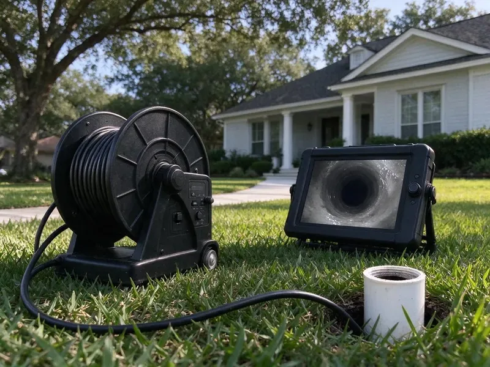

Sewer Line Cleaning in Aiken, SC
Protect your home from backups with scheduled sewer line cleaning in Aiken, SC, done by licensed local plumbers.
- Fast Sewer Line Clearing
- Lateral Cleaning to Street
- Upfront Pricing
- Recorded Camera Inspections

Need Reliable Sewer Line Cleaning in Aiken, SC?
Contact us now to schedule service and see the KBN Plumbing difference.
Expert Sewer Line Cleaning Services in Aiken, SC
KBN Plumbing understands the hassle and potential damage a clogged sewer line can cause for homeowners in Aiken. Our sewer line cleaning is designed to quickly identify and eliminate obstructions, from tree roots to grease buildup, using professional equipment.
Our expertise includes:
- Locator transmitters to mark line path and depth
- Maintenance scheduling for root-prone and grease-heavy lines
- Preventative maintenance programs for lasting flow.

Additional Drain Services Services in Aiken, SC
From stubborn kitchen clogs to main sewer backups, our drain services in Aiken, SC clear the line and keep it clear with camera-verified results.


Customers
Why Choose KBN Plumbing for Sewer Line Cleaning in Aiken, SC?
We give you the video and a written summary after every cleaning. That record helps you plan ahead and avoid emergency repairs.
- Licensed Plumbers, All our plumbers are fully licensed, insured, and highly trained in current sewer line cleaning techniques.
- Advanced Tools, Our technicians use professional equipment like sewer cameras and hydro jetters for precise diagnosis and effective cleaning.
- Local Expertise, We understand the plumbing challenges in Aiken, including soil conditions and local building codes that apply to sewer lines.
Citywide Coverage
From downtown to the farthest suburbs, KBN Plumbing provides complete sewer line cleaning throughout Aiken. Our wide coverage means we can deliver timely and efficient solutions right to your doorstep, limiting disruption to your routine.
Experienced Team
Our team of plumbers has extensive experience with sewer line cleaning, handling everything from routine maintenance to severe blockages caused by local soil and tree root systems. They are regularly trained on current methods and equipment to provide the best service possible.
Safety-First Approach
When KBN Plumbing performs sewer line cleaning, we prioritize the safety of your family and our technicians, following all industry best practices and South Carolina plumbing codes. Our thorough approach means your sewer system is not only clean but also safe and up to standard.
Trusted Certified Aiken Plumbing Services Professionals
At KBN Plumbing, we take pride in providing certified plumbing services throughout Aiken, SC. Backed by leading industry credentials, our experienced plumbers combine technical skill with genuine customer care. Whether it is repair, installation, or maintenance, we follow strict safety and quality standards to deliver long-lasting results you can trust.
Call Us Now PHCC Plumbing Contractor Recognition
PHCC Plumbing Contractor Recognition Better Business Bureau (BBB) Accreditation
Better Business Bureau (BBB) Accreditation Angi Certified Pro
Angi Certified Pro ISO 9001 Quality Management Certification
ISO 9001 Quality Management CertificationThorough Sewer Line Cleaning Services in Aiken, SC
Sewer Line Cleaning for Rentals and HOAs in Aiken
Rental properties often see more clogs from tenant use, like wipes and grease. We offer scheduled cleanings for landlords and property managers to prevent emergency calls. For HOAs and townhome complexes, we can clean shared lines and document each building. Service records help with budgets and planning. We arrange access directly with tenants when needed.

Sewer Line Camera Inspection in Aiken
A camera inspection shows the inside of your sewer line in real time. We look for bellies where water pools, offset joints, cracks, roots and corrosion. A locator in the camera head lets us mark the exact spot and depth on the surface. You get a copy of the video and our notes. This is helpful for home buyers, sellers and anyone with recurring clogs.
Sewer Line Cleaning Cost Compared to Replacement in Aiken, SC
Cleaning a sewer line costs a few hundred dollars, while replacement can run into the thousands. If the pipe is structurally sound, regular cleaning is often the best value. If the camera shows a collapse or a long belly, cleaning only buys time. We show you the footage and both price options. You make the decision with full information.
Commercial Sewer Line Cleaning in Aiken, SC
Businesses in Aiken, SC have different sewer line cleaning needs, often dealing with higher volumes of waste and commercial-grade blockages. Restaurants, for example, often contend with severe grease buildup. KBN Plumbing provides robust commercial sewer line cleaning designed to minimize downtime and keep your business running without interruption. We use powerful equipment to handle large-scale blockages and maintain your commercial plumbing effectively.
Sewer Line Odor Remediation in Aiken, SC
Persistent foul odors coming from your drains or yard can be a strong sign of a sewer line problem in Aiken, SC. These odors are often caused by trapped waste, blockages, or even a damaged sewer line allowing gases to escape. Our sewer line cleaning removes the sources of these odors, and our inspections can find any breaches in the line. We restore fresh air and proper function to your property.
Pre-Purchase Sewer Line Cleaning and Inspection in Aiken, SC
Many home inspections do not include the sewer line, yet a failing lateral can cost thousands. We clean the line first so the camera can see the pipe walls clearly. Then we record the full length and give a written report. Buyers can use this to negotiate repairs or credits. Sellers can use it to show the line is in good shape.
Preventative Sewer Line Maintenance in Aiken
Preventative maintenance is key to avoiding expensive and inconvenient sewer line problems in Aiken. Regular cleaning, especially for properties with older plumbing or known issues like nearby trees, can save you from major headaches. We can schedule periodic sewer line cleaning using methods like hydro jetting to keep your pipes clear of buildup before it becomes a severe blockage, extending the lifespan of your plumbing system.

Root-Infested Sewer Line Cleaning in Aiken, SC
Roots are the top cause of sewer line blockages in established neighborhoods. They enter at clay joints and small cracks, then grow into a dense mat that traps waste. We cut them out with root saws and finish with jetting to remove the fine hairs. The camera then shows each entry point. You can choose ongoing cleaning or a lasting fix such as lining.
Expert Sewer Line Cleaning Near Me in Aiken, SC
Knowing the local housing stock helps us work faster. We know which neighborhoods tend to have clay, cast iron or PVC laterals and what problems to expect. That experience shows in the quality of the cleaning and the advice we give.
When you search for sewer line cleaning near me in Aiken, SC, KBN Plumbing is your reliable local expert. We are very familiar with the plumbing infrastructure throughout the area, from older homes with unusual pipe materials to modern developments. Being close by means a fast response time when you need professional sewer line service.
KBN Plumbing at a Glance
- Fully licensed plumbing team covering Aiken, SC
- 24/7 emergency service with same-day scheduling
- Clear written estimates, no hidden fees
- 4.8-star rated by 596+ South Carolina customers
Aiken Map
Aiken Information
- Population
- 32,947
- Area codes
- Local
- Service area
- Aiken and communities within 40 miles
- Nearby
- Columbia, Sumter, Summerville, Greenville
Effective sewer line cleaning is key for homes in Aiken, SC, where shifting soil and mature trees often contribute to pipe damage and root intrusion, leading to frustrating backups. Red clay dominates much of the upstate, while the coastal plain of South Carolina has sandy soil and a high water table that affects drainage and digging.
Expert Services
Trust our professionals for reliable KBN Plumbing solutions in Aiken, SC.
Our Specialized Plumbing Services in Aiken, SC
At KBN Plumbing, we provide a complete range of plumbing services across Aiken, SC. From leak detection to full system installations, our team ensures fast, precise, and affordable service for both residential and commercial properties. Explore our core services below:


How Our Sewer Line Cleaning Process Works in Aiken, SC
At KBN Plumbing, we follow a proven process for sewer line cleaning that delivers thoroughness and lasting results for our Aiken, SC customers.
Request a Quote
Call (864) 588-3813 and tell us about any slow drains or backups. We give you a price range and schedule a time that works.
Clean the Lateral
We access the line through a cleanout and use cables or jetting to clear it. Roots, grease and debris are removed all the way to the street connection.
Camera and Report
We run a camera through the cleaned line and mark any problem spots. You get the video and our recommendations.
Frequently Asked Questions About Sewer Line Cleaning in Aiken
The cost of sewer line cleaning in Aiken, SC typically ranges from $200 to $600, depending on the severity and location of the clog, and the method required, such as snaking or hydro jetting. More complex issues like extensive tree root removal or deep blockages can sometimes cost more. We provide upfront, clear pricing after a diagnostic assessment.
Yes, KBN Plumbing stands behind our work. We offer a satisfaction guarantee on all our sewer line cleaning. Warranty details will be given at the time of service, for your peace of mind.
Common causes include tree root intrusion, buildup of grease and food particles, flushing non-biodegradable items like wet wipes or feminine hygiene products, and structural issues like cracked or collapsed pipes. Older homes often have clay pipes that are prone to root invasion.
We use sectional and drum cable machines, hydro jetters and color camera systems with locators from trusted professional brands.
For most homes in Aiken, annual or twice-yearly sewer line cleaning is sufficient, especially if you have mature trees nearby or an older plumbing system. If you have frequent clogs or a high-usage commercial property, more frequent cleaning might be wise to prevent major backups.
Yes, KBN Plumbing stands behind our work. We offer a warranty on our sewer line cleaning. The terms and length of the warranty depend on the service performed and will be clearly explained by our technician before work begins.
Slow drains in several fixtures, gurgling toilets, sewage odors and backups in the lowest drains are typical signs.
Hydro jetting is usually safe for most pipe materials, but it is crucial to have a professional assess your sewer line's condition first. We always perform a camera inspection to confirm your pipes can handle the high-pressure water without damage, especially for very old or severely corroded lines.
What People Are Saying About Our Plumbing Experts?

Robert G.
The trenchless sewer replacement saved our front yard. They walked us through the camera inspection footage first so we knew exactly what we were paying for.
Sewer Line Replacement · Greer, SC
Emily R.
I called KBN Plumbing for plumbing repair, and the technician was fast, polite, and thorough. They explained the problem clearly and fixed it the same day. I will definitely hire them again. Highly recommended!
Plumbing Repair · Sumter, SC
Laura S.
I scheduled a water heater replacement, and the team made the process smooth and affordable. The new unit works perfectly, and they cleaned up after completing the job.
Water Heater Replacement · Summerville, SC
Mark T.
When our office needed drain cleaning, KBN Plumbing provided quick, reliable service. The plumber arrived on time and made sure every drain flowed perfectly before leaving. Very satisfied.
Drain Cleaning · Columbia, SCJames P.
Our commercial plumbing system had a leak under the sink, and KBN Plumbing handled it professionally. The plumbers arrived quickly and restored everything without disruption to our customers.
Commercial Plumbing · Columbia, SC
Patricia H.
We had a slab leak that two other companies could not find. KBN Plumbing located it in under an hour, explained our options, and the price matched the quote to the dollar.
Slab Leak Repair · Spartanburg, SC